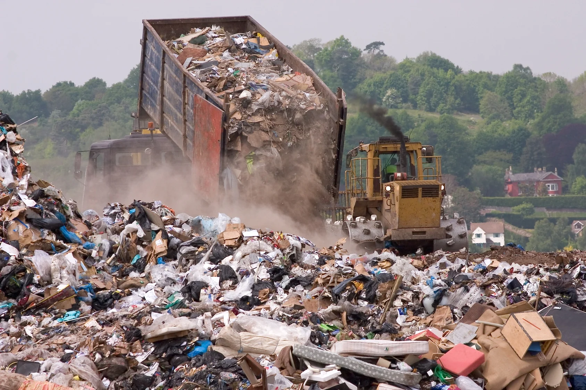

Visual observations and resident feedback highlight repeatable pressure points: overflow at primary collection sites, informal sorting without protection, and waste intrusion into canals during rainfall.
Where the system breaks first
Hyderabad's waste chain is stressed at the neighborhood level before it reaches transfer points. When collection routes slip, the backlog becomes visible within days, pushing mixed waste into drains and alleys. These patterns are consistent across dense blocks and peri-urban corridors.
Primary collection points exceed capacity, spilling into streets and footpaths where pedestrian traffic is highest.
Recyclables are separated without PPE, increasing exposure to sharps, medical waste, and organic contamination.
Mixed waste drifts into canals and drains, reducing flow capacity and raising the risk of stagnant water and vector breeding.
